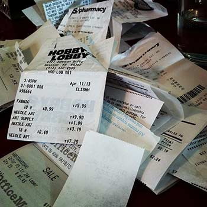

Melhores dicas

Como evitar o furto e roubo na sua bagagem
Há algumas semanas, a leitora do Vai Pra Disney Marcia Barros, nos sugeriu um tópico que é de interesse de muitos que viajam para o exterior, principalmente para aqueles que planejam fazer compras: como arrumar as malas para evitar os roubos nos aeroportos?
Infelizmente este risco é uma realidade não só dos aeroportos do Brasil, mas também de diversos outros países, incluindo os EUA. Por isso, todo cuidado é pouco na hora de arrumas as malas e preparar a sua bagagem na volta da viagem.
Já falamos sobre como evitar roubos dentro dos hotéis (clique aqui para ver nosso guia completo sobre isso), e hoje reuni algumas dicas que tanto a Re como eu colocamos em prática em nossas viagens ao exterior buscando aumentar a segurança das nossas bagagens no percurso para casa. Espero que elas possam te ajudar a evitar uma dor de cabeça (pra falar o mínimo) com a sua bagagem na volta de sua viagem.
Não coloque nada de alto valor na bagagem despachada
Muitos funcionários das companhias áreas já alertam sobre este ponto na hora de fazer o check in, mas muita gente não presta muita atenção, por isso eu repito: qualquer item que seja de valor, leve na mala de mão com você. Isso incluí: máquina fotográfica, laptop, tablet, celular, videogame, jóias… Na mala de mão você pode levar quase tudo, com exceção aos itens cortantes e líquidos com mais de 100ml. Então faça um bom uso dela e evite despachar bagagem com itens caros.
Aos dorminhocos, cuidem da sua bagagem de mão
Pegar vôo noturno é um convite pra aquela dormida desconfortável no avião (pelo menos pra mim), então não bobeie e guarde o passaporte e o seu dinheiro junto com você. Eu faço isso quando viajo com dinheiro em espécie: coloco tudo nos bolsos da calça ou do casaco. Tem gente que ainda usa aquelas barrigueiras para guardar os dólares, mas eu acho muito desconfortável de usar.
Se estiver levando itens grandes na mala de mão, use um cadeado para prevenir que qualquer um abra a sua mala durante o seu sono no vôo.
Tome cuidado com as malas de grife
Eu entendo o desejo das pessoas de comprar malas bonitas, de grife e tal. São elegantes e até eu mesmo fico com vontade de comprar algumas delas quando vejo no shopping. Mas seja forte e resista, pois todas as malas, caras ou não, vão ser tratadas do mesmo jeito pelas empresas que as carregam a bagagem do check-in até o avião: como sacos de lixo.
Elas são jogadas de um lado para o outro e fatalmente vão ser rasgadas, ter alças quebradas e cantos trincados. Até mesmo aquelas que são etiquetadas com “frágil” no momento do embarque. Uma vez li uma “confissão” de um funcionário de aeroporto dizendo que quando ele via uma mala “frágil” ele jogava mais forte ainda. Quanta maldade! Espero que isso não aconteça com todos, mas por via das dúvidas, não invisto muito dinheiro na compra da mala.
Além disso, as malas de grife acabam chamando mais atenção de quem está mal intencionado. Se a mala é cara, imagine o que tem dentro? E dai, você corre mais risco de ter seus pertences bisbilhotados por alguém. Não estou falando para você usar mala porcaria. Justamente porque elas serão jogadas de um lado para o outro, é importante ter uma mala minimamente resistente. Só estou dizendo que não precisa ser uma hiper cara e muito menos uma que chame atenção para a marca.
Prenda o zíper/cadeado na alça da mala
Uma das mais conhecidas maneiras de se furtar itens de uma mala é utilizando um golpe chamado de “cesárea”, em que o ladrão usa uma caneta ou qualquer item pontiagudo para abrir o zíper e depois fechar a mala, mesmo que ela esteja presa com o cadeado. Isso acontece, pois o cadeado em geral prende um zíper no outro, mas ele pode ser deslizado ao redor da mala, então o ladrão força a abertura do zíper e depois a fecha deslizando os zíperes com o cadeado.
Abrindo uma mala com uma caneta. Veja que o zíper está trancando a bagagem com cadeado.
Conteúdo da bagagem pode ser acessado facilmente com esse golpe. Depois é só deslizar o zíper com o cadeado que a mala se fecha novamente.
A melhor maneira de evitar esse golpe é prendendo o zíper e o cadeado em algum ponto fixo da mala como a alça por exemplo. Para isso, use aqueles lacres de plástico se possível de uma ou duas cores bem diferentes, para que o ladrão não prenda de novo com um qualquer.
Algumas empresas vendem lacres parecidos, prometendo segurança adicional, mas eu acho besteira gastar tanto com isso. Basta comprar lacres simples que são vendidos em qualquer supermercado ou papelaria.
Esses são os lacres que eu compro para travar a minha bagagem. Encontrei em uma papelaria por R$5, um pacote com 50.
É evidente que fazendo isso, você não vai prevenir a ação, mas vai sem dúvida inibir, já que o ladrão quase sempre escolhe a mala mais vulnerável para furtar.
Faça listas e tire fotos do que você colocou em cada mala
A Re sempre anota em um papel todos os principais itens que colocou em cada mala que está despachando. Assumo que tenho preguiça de fazer isso, mas certa está ela que vai poder conferir tudo o que entrou e depois saiu da mala. Se há algo faltando, podemos reclamar com a cia aérea ou acionar o seguro para recuperar o valor perdido.
Uma outra idéia é tirar foto das malas abertas e de tudo o que colocou dentro dela. Além de economizar um tempinho na lista, você ainda vai ter “provas” para usar no momento de recuperar o que foi roubado, se isso por azar acontecer com você.
Guarde os recibos de todas as compras
Seguindo a linha do que falamos acima, uma vez percebido o que foi furtado chega a hora de pedir a indenização para a cia aérea. Nesse momento é de extrema importância conseguir comprovar qual foi o valor perdido e por isso eu sempre guardo todas as notinhas de tudo o que compro no exterior.
Já tinha comentado sobre a importância disso na matéria em que falamos sobre a alfândega (clique aqui se ainda não leu), mas com os recibos em mão, você pode provar para a cia aérea e/ou para a seguradora, que os itens que sumiram valem $X.

Faça um bom seguro de viagem
Já falamos aqui no Vai Pra Disney da importância em se contratar um bom seguro de viagem antes de partir pro exterior (clique aqui para ler a matéria), mas além de te cobrir nos possíveis gastos médicos, o que muita gente não sabe é que a maioria dos seguros de viagem também cobrem roubos e extravios de bagagem.
Então se a cia aérea estiver fazendo jogo duro pra te reembolsar o valor furtado, é só acionar o seguro que eles mesmo cuidam de tudo.
Uma vez tive uma mala extraviada e a cia aérea estava cheia de burocracia pra encontrá-la. Liguei para o seguro e eles mesmo fizeram a pressão necessária para que a empresa me entregasse a mala muito rapidamente.
Não esqueça do aeroporto
Acho que essa dica todo mundo já sabe, mas nunca é demais repetir: diferencie a sua mala das outras. Não é somente longe dos nossos olhos que os furtos acontecem, mas muitas vezes, as malas mais “discretas” são retiradas da esteira de bagagem e levadas sem a gente perceber.
Por isso duas dicas: assim que o avião pousar, saia logo para passar na imigração e pegar as suas malas da esteira. Além disso, coloque fitas, elásticos, adesivos e tudo o que puder para diferenciar a sua mala das demais. Afinal, não somente pessoas mal intencionadas pode pegá-la, mas outras pessoas distraídas também. O pai da Re já pegou a mala errada por engano. Era igualzinha a dele, mas era de outra pessoa. Sorte que a mãe da Rê percebeu rapidinho e deu tempo de fazer a troca pela mala certa. Desde então eles sempre colocam alguma coisa na mala para diferenciar as malas deles das demais.
Plastificar ou não a bagagem?
Entre nós eu nunca plastifiquei as minhas malas. Primeiro porque acho muito caro. Segundo porque malas despachadas nos EUA, podem sempre ser abertas pelo TSA (Transportation Security Administration, a polícia dos aeroportos americanos) para fiscalização de itens duvidosos. As minhas malas e da Re quase sempre são paradas, pelas comidas engraçadas que trazemos para o Brasil.
Porém, seguindo a regra de “dificultar” a ação dos ladrões, o plástico pode sim ser uma barreira adicional. E se não quiser gastar dinheiro, é só passar no Walmart, comprar plástico filme e fita adesiva para embalar a sua mala pagando quase nada.
Espero que as dicas sejam úteis e que ninguém aqui tenha que passar pela dor de cabeça que é ter itens furtados da sua mala. Se tiver outras dicas, fique a vontade para deixa-las na caixa de comentários, abaixo.